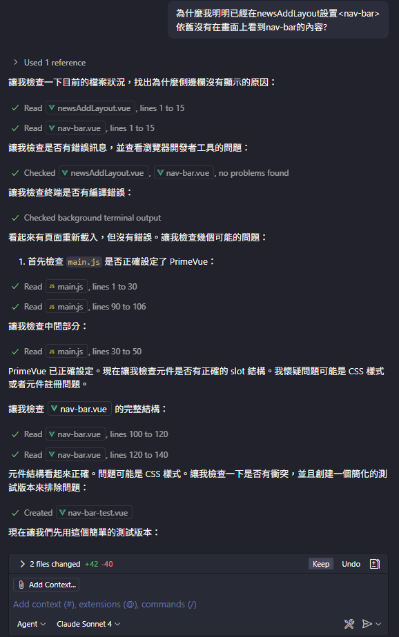
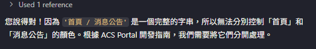
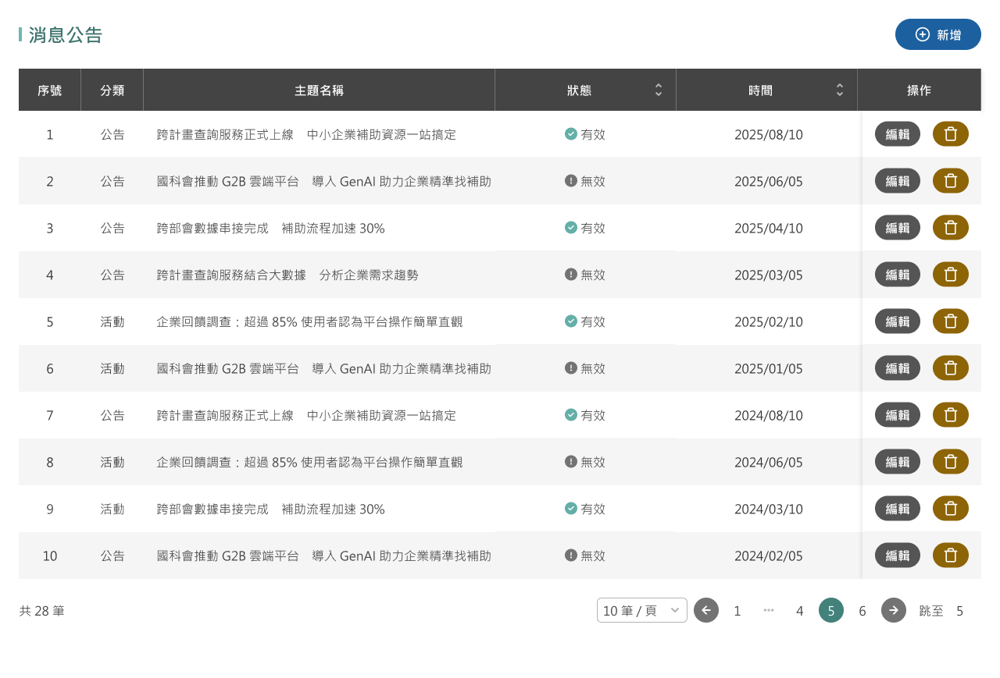
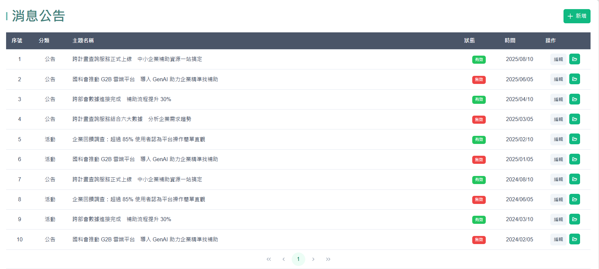
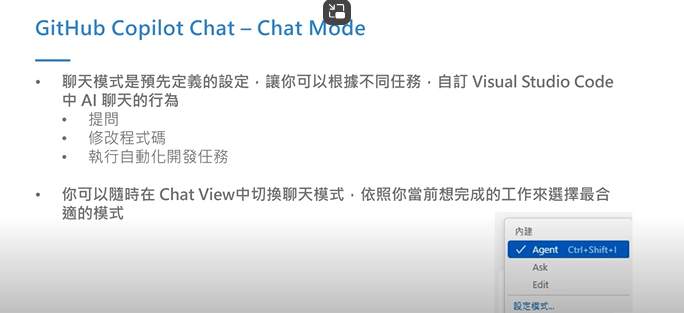
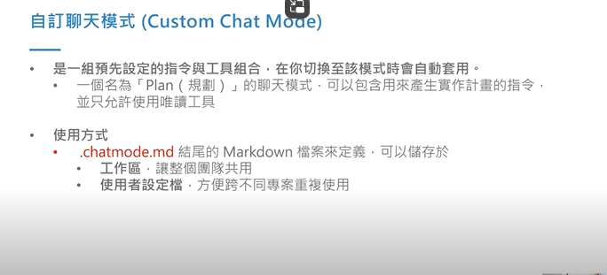
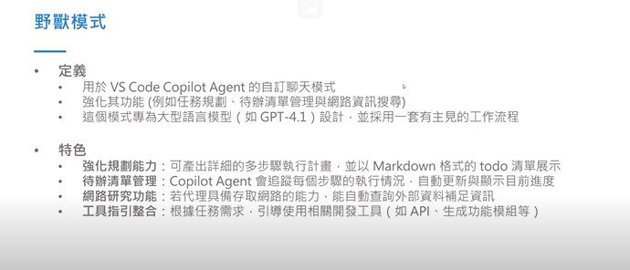

1. Vibe Coding 是什麼？
- Vibe Coding，又稱「氛圍編碼」，是由AI 工程師 Andrej Karpathy 於2025 年初提出的軟體開發新模式
- 核心概念是開發者透過自然語言，向大型語言模型（LLM）描述需求。由AI 負責生成程式碼、除錯和優化，讓開發者專注於創意發想與高層次架構，甚至「忘記程式碼的存在」
2. Vibe Coding 核心理念
- 從「寫程式」到「描述需求」
- 讓AI作為程式設計夥伴
- 「氛圍」與「感覺」的強調
3. Vibe Coding 優 / 缺點
✅ 優點
- 提升開發速度
- 降低開發門檻
- 激發創意與創新
❌ 缺點
- 程式碼品質控制不佳
- 可維護性與擴展性差
- 錯誤與除錯困難
- 安全性與資安風險
- 過度依賴 AI / 工具黑箱性
- 責任／所有權問題
4. Vibe Coding 實戰經驗
主題一：確認 AI 思考的過程


主題二：開發指南 Instructions
📋 Copilot Instructions 生成過程說明
- 設定 - 產生指示(generate instructions)
- 翻譯成中文
- 之後每一次詢問copilot 皆會先以此份文件內容為優先考量 
主題三：figma圖片切版


- 建議搭配figma原圖 + 下prompt + 手動微調 (下prompt + 本身技術)
- 建議複製需要區塊的code就好 否則會出現很多多餘 它預先幫你想好設置的code 無論是template或是script -> 出現幻覺
5. GitHub Copilot Chat - Chat mode



github copilot chat mode
https://github.com/github/awesome-copilot/blob/main/README.chatmodes.md
Beast Mode & Planer Mode
Beast Mode
- 設計上帶有「代理 (agent) + 自動化」的風格：它不只是回答、建議或編輯，而是嘗試自己完成任務、做研究、編寫代碼、做驗證。
- 模式中往往會有「Todo 清單 / 檢查表 (checklist)」、「反覆研究 (recursive fetch)」、「工具呼叫 (tool use)」等要求，強制它一步步走，不提早結束。
- 它多引用各種工具（例如 editFiles, runTasks, search, terminal 等）來實際操作、驗證結果，而不只是回文字。
Planer Mode
- 用來讓 Copilot / Chat 主要專注在「規畫／設計」上，而不是寫code或操作。
- “只負責規畫 / 策略 / 步驟” 的模式，不會直接改動代碼，只產出計畫、架構、步驟清單。
5. 時事分享
9/26時事 vibe coding風險
- 作者使用vibe coding的方式實作了一個app，在某段被棄用的script中寫了一個 API key，這段程式碼被公開後，key 被濫用，導致他在 Google Cloud / Gemini API 被收了約 $300 美元的費用。
- 即使這個檔案在 codebase 中只存放兩天，也足以讓 key 被公開與濫用。
- 在資安報導與技術媒體中，有多篇文章警告 “vibe coding” 的危險面，特別是自動生成程式碼時常會把 secrets, tokens, API keys 等敏感資訊直接嵌入代碼中。